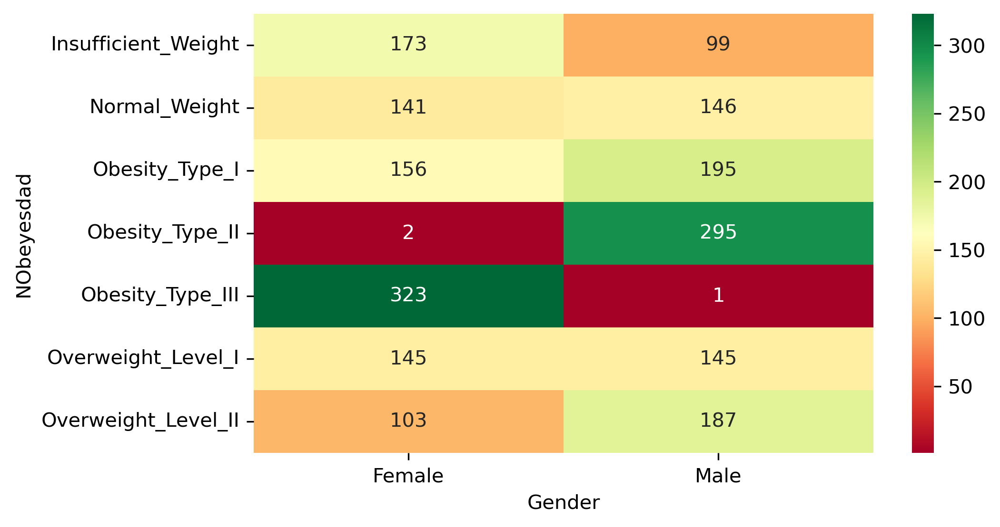
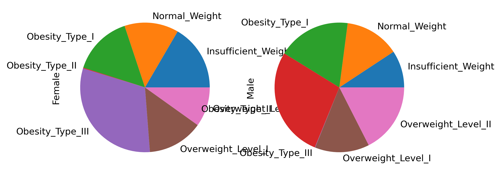
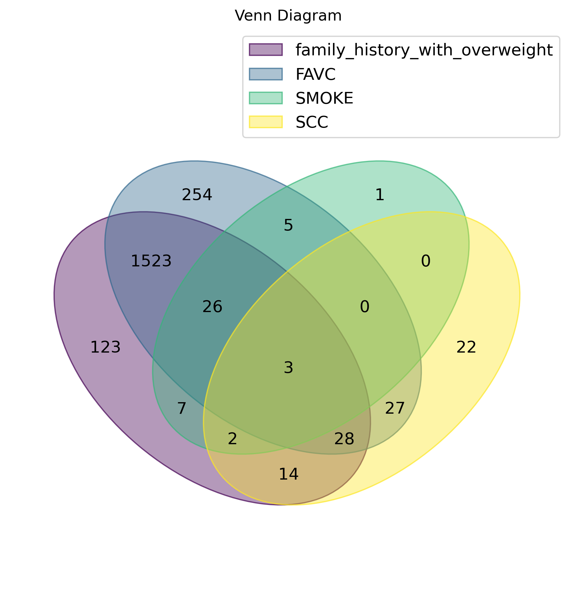

Data Visualization Tasks
barplot
Improve a plot
Imports
Data and Definitons
Code
keys: dict_keys(['data', 'metadata', 'variables'])
categorical variables: Index(['Gender', 'family_history_with_overweight', 'FAVC', 'CAEC', 'SMOKE',
'SCC', 'CALC', 'MTRANS', 'NObeyesdad'],
dtype='object')Task 1
Code

- Explain the problems with this plot
- implement improvements to visualize the counts.
- normalize the counts to visualize the joint distribution over the two variables
- replace var1 with “SCC” (Monitoring Caloric Intake) and prepare a “Mosaic plot” to visualize the counts
Task 2: Pie2Bar
Marginal and conditional distributions for categorical variables are often visualized as Pie charts.
The following would visualize the proportions of obesity categories given a gender. \[ Pr(\mbox{Obesity Category}| \mbox{Gender}) \]
Code

However this is not a very good visual encoding.
- Explain why pie charts are difficult to interpret and compare visually.
- Replace the pie chart with a stacked barplot to compare the distribution of obesity category by Gender
Task 3: Risk Factors & UpSets
Several variables in the obesity dataset describe patient-level risk factors or behaviours. They can be encoded as Boolean variables and they define sets of individuals based on the Boolean status (True / False).
Code
from venn import venn
risk_vars = ["family_history_with_overweight", "FAVC", "SMOKE", "SCC"]
risk_bool = df[risk_vars].eq("yes") # convert to Boolean
risk_bool.head(3)
# construct sets of elements (= individuals)
elements = risk_bool.index # all indicies of risk_bool
venn_sets = {
col: set(elements[risk_bool[col]])
for col in risk_bool.columns
}
plt.figure(figsize=FIGSIZE)
venn(venn_sets)
plt.title("Venn Diagram")
plt.show()<Figure size 1050x600 with 0 Axes>
Based on this Venn Diagram
- Determine the total elements (individuals) in each set
- How many individuals smoke and monitor their caloric intake (SCC=True)
- Explain why a Venn diagram becomes hard to read when several sets are compared
- Prepare an UpSet plot for the same analysis and sort by intersect size (cardinality)
You can use this package and data preparation
Code
# if needed
# !pip install upsetplot
from upsetplot import UpSet, from_indicators
warnings.filterwarnings(
"ignore",
category=FutureWarning,
module="upsetplot"
)
# define multi-index of Booleans
upset_data = from_indicators(risk_bool.columns, risk_bool)
# count multi-index
upset_counts = upset_data.index.value_counts()